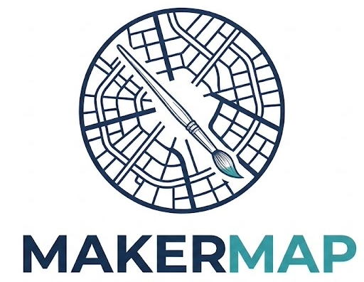

Este arquivo precisa ser baixado e aberto no navegador (Chrome ou Edge), com internet ativa — o fundo do mapa vem de um servidor externo. Se a mensagem persistir, a rede pode estar bloqueando cdnjs.cloudflare.com ou tiles.openfreemap.org.